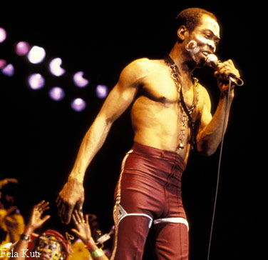
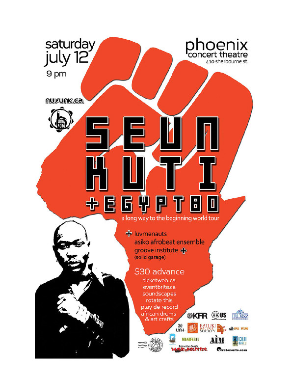

Notes From A Reporter’s Journal
Why does Fela matter?
By Peter Uduehi
I first saw Fela Kuti perform, like many of his adoring fans did, at his enormously popular club called the African Shrine in Lagos. That was in 1979. It would take ten more years to catch up with him, this time as a freelance journalist in New Orleans, where the Afrobeat music king performed two nights at the historic Tippitinnas Lounge. It was as close as I could get to him, in a dressing room that he loathed and didn’t hesitate, as usual, to lambaste whoever was responsible for leading him into such a dungeon – a ramshackle back room filled with graffiti and smelling like a hobbled, dingy annex to the city’s oldest nightclub.
 “Look where they have brought us in to perform. What kind of place is this?” he pondered aloud.
But more thrilled by the idea of a possible interview than his annoyance with Tippitinnas’s dilapidating ambiance, I quickly asked for one on a radio station I worked for at the time. He declined due to timing, but told me he would be available to talk to me for print at his hotel, which meant I could publish his comments in any of the newspapers I was stringing for in the city. However, I never had the opportunity to publish his views in the New Orleans press because I left the city for good to live in Houston the same day Fela and his band concluded their tour in the Louisiana town. Coincidentally, we met again in Houston because it was going to be one of his next dates a few days after I left New Orleans. Another point to note is that, because of my love for Fela’s musicianship, I decided to treat him and his band to a hearty Nigerian meal in New Orleans, dipping into my meager earnings to cook fufu and egusi soup (laced with fish and hen parts) for more than twenty of them. I thought they would enjoy the little delicacy having being away from Nigeria for at least a month touring the world. They were quite appreciative, with some of them struggling through the line to give themselves an enthusiastic helping of the Nigerian staple. Fela was very peeved when told his entourage stressed through the queue to the food cauldron.
“Stupid,” he called one of them, as he brought everyone to order. Fela himself liked the meal and had a good portion.
“Remember I am not a gentleman,” he said jokingly, a reference to his much-publicized tune Gentleman that lampooned Africans who pretend, supplant and confuse the mores of their native origins with European colonial attitudes and ways. I must say I was absolutely impressed by the humility and free-spiritedness with which he succumbed to a surprise dinner from a man he was meeting for the first time and whose only connection to him was that he hailed from his country. Most mega stars and celebrities would have squirmed or showed signs of unrestrained apprehension and timidity at anyone they had just stumbled into. But Fela understood quite well that it was an African thing to be honoured in that fashion.
Meanwhile, I quickly seized the opportunity of an interview with him, engaging him for two hours on his music, lifestyle, women, politics, and just about everything he had done since his Anglican-priest father and pace-setting revolutionary mother gave birth to him on October 15, 1938. He asked me to bring him whatever amount of marijuana I could give him as a present on my way to his hotel suite. I showed reluctance on that, telling him I couldn’t guarantee finding it because I don’t smoke. It would have been unethical as a reporter, not to mention my aversion to cannabis-ingestion. Knowing full well how much he loved to smoke the drug, Fela gracefully sensed and accepted my position, and then said: “you look like a nice person, and it would not matter if you bring it or not. I just want us to talk so you can understand where I’m coming from with my music and message.”
If you thought he was a disorganized, brain-warped and pot-smoking radical bordering on lunacy and without affection for the things he espouses in his music, think again. Fela was as organized in thought as his Afrobeat invention is; a keenly sharp individual who took note of every detail he discussed with you. At the end of our interview, for example, he told me he was very impressed when I told him in a straightforward manner that I could not oblige to his request. “I wish most of our so-called politicians were straightforward in Africa. It will be the best place to live on earth,” he chided.
For so many years, his candour and constructive criticisms won him adoring fans, and it was easy to see why. “People used to dance to my music while at the same time listen to the message in the music; I believe music without a message or African philosophy is not my style. That’s not what I am about.
“This is why music is about feelings and the senses,” Fela explained, noting that he was aware that “some of my fans say that I have allowed the message to overshadow and dominate the elements of my music. But you see, my brother, both have always been present in my music, but what is probably not there so much as before is the fast pace to make you dance as fast. But what you must understand is that …the bastards who are our so-called leaders have become stronger in their wicked ways. So also I have no choice but to increase the volume of my noise against these soldiers and corrupt politicians,” he said.
Some of the releases criticized as lacking luster with the step include Look and Laugh, Perambulator, Teacher Don’t Teach Me Nonsense, Beasts of No Nation, and ODOO; all of them suffused with great delivery of subversive messages but considered by many not to be of major partying value like Shakara, Lady, No Bread, and many others in the classic genre.
Vintage Fela bopped, weaved, entertained in regal fashion, lectured and danced. He goaded people in authority because he felt it would be an effective tool to correct a whole lot of discrepancies in modern African societies, “not because I hate authority but because power should be used to help your people”. Twice he said, he thought of committing suicide because he felt there was really nothing to live for as an ambitious African, and also because he felt he was fighting alone without much support from the Nigerian frightful masses. “After all I have had the opportunity to swim in money but I chose not to because money cannot be a man’s central focus in life,” he said.
“Our entire culture as a people,” Fela opined, “is not progressing. We do not do enough research in medicine, the arts, and in the spirit, and I tell you, my brother, we can achieve great things if we think correctly. African people have the soul and spirit to do anything. It’s like football. We must develop our own way of playing soccer. African man must dance with the ball. That’s our rhythm,” he joked. On a serious note, he said, “If others choose to do as we do, that’s okay, but we must develop our own style instead of following what everybody does. Look at Egypt. I am talking about ancient Egypt. That was Blackism. Look at those achievements”, he sermonized. As an inventor, he said he could relate perfectly to the creative juices that flow through every human being but that these musings have remained dormant as a result of fright and “leadership breakdown in Africa”.
Those who did not have the opportunity to sit down and talk with Fela, but had an earful of his lyrical compositions would think the self-styled chief priest was racially motivated. Of course not; otherwise how do you explain the fact that one of his best friends, and one-time band member who insisted on understudying the Afrobeat superstar, was the white British renowned drummer Ginger Baker. “I simply used certain examples of our colonial past to drive home some hard facts, and particularly because Britain and America or white people in general have become an integral part of our history as a people. I believe in my Blackness,’ Fela stressed, “and I have studied it, and if a man is first not proud of himself how can he be proud of others. I just want my people to progress like other people. And there’s nothing wrong with that.”
Whether you agree with him or not one thing is clear: Fela matters today because he gave us the language to describe ourselves, as “zombies”, as “shakara” people, as “kpansa kpansa”, as “authority stealing”, as “BBC” (Big Blind Country), as “Alhaji...means that you are a Stranger in your own land”, as “dem-all-crazy” (“Democracy”), as “Mattress”, as “Jenku-oku”, as “Follow-follow”, as “yellow fever”, as “beasts of no nation”, and so on. He predicted a lot of things and events that have come to pass like the magic words of a prophet. Fela told us in 1976 in his song Army Arrangement that people everywhere are so fed up with politicians that they will either have to revolt en masse or bodyguards will take on the unenviable task by helping citizens assassinate their bad heads of government. It happened in 1980 with the assassination of Anwar Sadat of Egypt at the hands of his security detail. The recent revolution that befell Sadat’s protégé Hosni Mubarak is further evidence of Fela’s predictions; not to mention Tunisia’s president Ben Ali who fled the country after an uprising early this year. Libya’s Col Muammar Gadhafi has faced a similar challenge.
Fela also said in the same song that “one day go be one day for those wey dey steal money for government”. Translated, it reads like this: “one day shall come when Africa’s corrupt leaders, no matter how powerful they think they are, will be held to account in public”. Since Fela’s death in 1997, Nigeria’s powerful elite was shaken up when for the first time a civilian government headed by Olusegun Obasanjo (himself a member of the elite) commissioned an anti-graft agency called Economic and Financial Crimes Commision (the dreaded EFCC) headed by a no-nonsense lawyer-police officer, who probed high-ranking public officials alleged to have committed egregious financial crimes against the state. Their net included a disgraced police boss Tafa Balogun who stole millions of dollars. He was sacked summarily and jailed. He was also forced to pay back millions of dollars of his loot. What the EFCC did on Balogun in 2005 was an absolute coup of immense proportions because no-one in Nigeria thought that a big man could be so humiliated in a country where the huff and puff of an influential figure was enough to send the average citizen squirming. This was the hope Fela provided us in his songs. They were songs of freedom of sorts.
The same punishment is being meted out against Ben Ali and Mubarak who is said to have amassed billions of dollars of his people’s money in Swiss banks and around the world.
